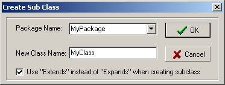

Create A Subclass
This is a Basic Procedure tutorial.
Link to this page from tutorials, mapping topics and code listings for custom classes, for example:
[[Create A Subclass]] of the ClassX, eg "MyClass" in [[MyLevel]]
Overview
Most programming in UnrealScript is done in a text editor or IDE, and a whole bunch of classes are then compiled with Ucc.
However, it's possible to add a single new class to the hierarchy within UnrealEd. This method has limitations, but is suitable in certain circumstances. It's particularly useful for adding custom actors to a map, as the new class can be embedded in the MyLevel package, just as any other resource.
For more on working with classes, see OOP and UnrealScript Lessons.
Instructions
To create a new subclass in UnrealEd
![[unrealed-newclass]](images/unrealed-newclass.gif) |
- Open the Actor Classes browser.
- Click on the class that will be the parent of your new class.
- Do Actor Classes Browser Menu → Class → New...
- In the dialog box that appears:
- Enter a package name (use MyLevel if you want to save the new class within the currently open map).
- Enter a class name. If you're pasting in some ready-made code (from this site, for example), the name must be the same as the class name at the top of the script.
- Press OK. The Script Editor window opens, showing the class header of the new class.
Getting started with the new class:
- You can paste in text with
Ctrl+V. The pasted text is sometimes displayed as black on black, so if you can't see the result of pasting, double-click the class name in the left-hand pane of the editor – that will update the text colours. - The scripts on this site usually include a header, so you'll have the top four lines twice. Delete one set.
- If the code you are pasting has a Default Properties block, you must remove the block completely. Keep the text you've removed for reference, you'll need it.
- Click Tools → Compile Changed to compile the class. If the compilation is successful (no errors detected in the code you entered), you'll get a "Success" message in the editor window's status line (you might have to move the window up a bit to see it). You can make changes and compile as often as you wish, even after an object of that class has been added to the map.
- If you removed a Default Properties block, you must set these in the editor:
- Select the new class in the Actor Browser, and do Actor Classes Browser Menu → Class → Default Properties.
- Make the changes in the properties window that correspond to the block of code you removed earlier.
To add an object of the new class to the map, select it in the class tree like you would any other class. For movers, right-click the Add Mover button in the toolbox.
Remember to either save your package, or add an object of the new class in your map if you are using the MyLevel pseudo-package.
To create a new subclass in WOTgreal
This howto assumes WOTgreal version 2.700, other versions might differ.

|
- Select the class you want to subclass in the Class Browser (View menu → Classes).
- Go to Browser menu → Create Sub Class, or just click the Create Sub Class icon.
- In the dialog that appears, fill in the name of the package you want to add your class to and the name you want the subclass to have.
- When compiling for UT2003, be sure to check 'Use "Extends" instead of "Expands" when creating subclass'. In UT2003, the "expands" keyword has been removed.
- Click Ok and WOTgreal will create a nice starting template for you. The .uc file will be created when you first safe this new class.
Related Topics
- MyLevel – More information on embedding resources in a map file
- UnrealScript
- Script Editor
- Third-Party Components and Open Source – Classes you can add to a map using this method
- Mapping Hello World – A tutorial on using a custom script